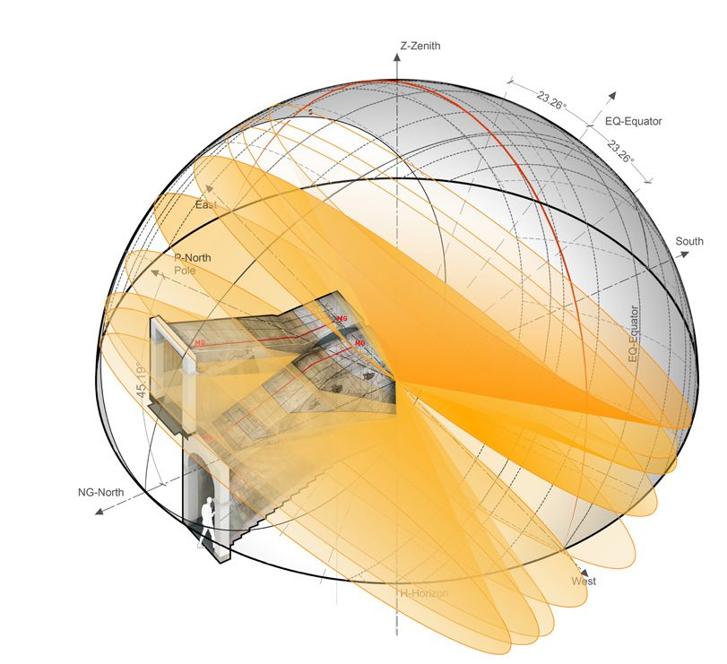
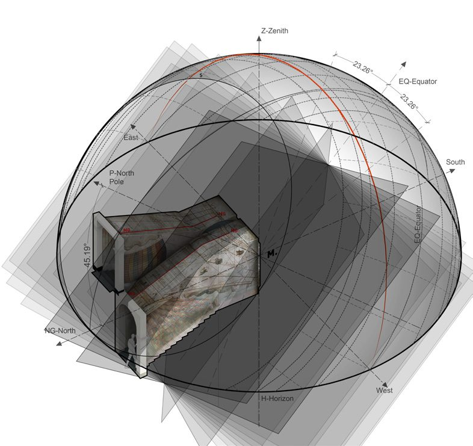
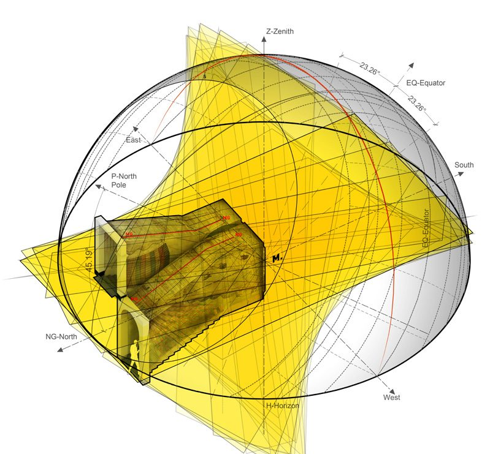
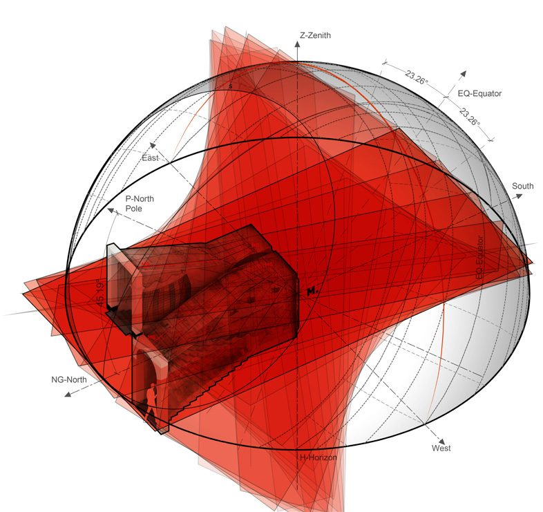
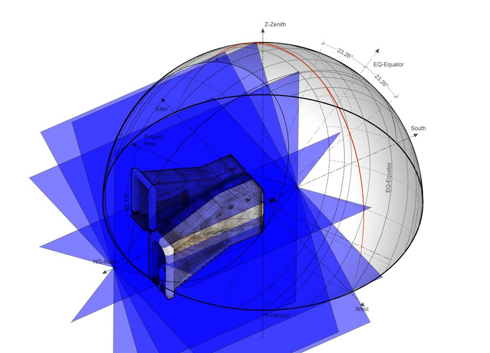
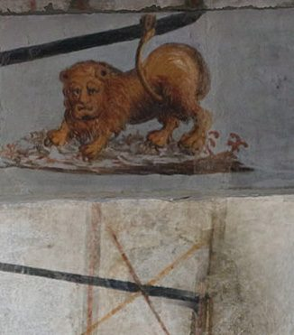
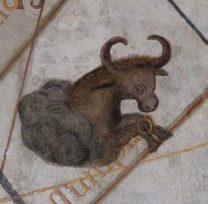
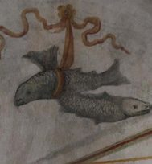
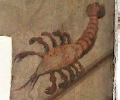

φ = 45.1885°Grenoble's latitude sets the tilt of every axis and plane.
15°step for hour planes · 30° for the celestial houses.
±23°27′the solstice declinations that bound the year's light spot.
F = (B + I) / 2why red and yellow cross black where they do.
Chapter II · 5
Five Ways to Tell the Time
Solar declination, French, Babylonian and Italian hours, and the twelve celestial houses — each rebuilt as an ideal sphere and intersected with the room.
The analytic core of the thesis. For each system of lines on the fresco, an ideal celestial sphere at Grenoble's latitude (φ = 45.1885°) is built, the relevant family of planes or cones is generated, and its intersection with the model of the staircase is compared against what Bonfa actually painted. Five systems, five spheres.





iThe zodiac — solar declination
The Sun's declination runs from 0° at the equinoxes to ±23°27′ at the solstices, with intermediate stops near ±11.4° and ±20°. Each value is a cone of light sharing a common vertex and axis, tilted at φ to the north; intersected with the room it gives the month / zodiac lines. The summer-solstice curve (22 June, Cancer) lies closest to the window, the winter one (December, Capricorn) furthest; the bright spot spends the year between them. Around 20–22 March the spot runs a straight line through Aries; every other sign is a hyperbola. Each curve carries an allegorical figure.




iiFrench hours
Civil time — 24 equal hours from midnight, used in France from about 1500. On the sphere the hour lines come from planes of light through the Sun and the polar axis, rotated about the pole in steps of 15° from the noon meridian. Painted “mixto colore” — dark grey / “Paris mud” — in Roman numerals: VIII–XII for the morning, I–IV for the afternoon, with half-hour lines between. Because of the reflection, the morning hours that would fall on an ordinary dial instead rise up the wall. The carefully drawn XII line is the Grenoble meridian. The semi-diurnal arc obeys cos H₀ = −tan φ · tan δ.
iiiBabylonian hours
Equinoctial hours counted from sunrise; standard in Europe around 1300. The Babylonian hour is 0:00 at sunrise, so the system is 24 great circles starting from the horizon, generated by rotating the horizon plane about the polar axis in 15° steps (axis inclined 45.1885° to the horizon). Painted yellow, in Arabic numerals. Four dotted ceiling lines mark INITIVM AVRORAE, OCCASVS SOLIS, ORTVS SOLIS and FINIS CREPVSCVLI for set dates.
ivItalian hours
Equinoctial hours counted from the last sunset — ROMANE RVBRAM, red for Rome. Obtained by flipping the Babylonian dial 180° about the x-axis; the hour markers end at XXIV on the horizon. Painted red, symmetrical to the yellow set. Together the two make the dial's accuracy independent of day length: at the equator the count of Babylonian hours n equals Italian n + 12, and
- Sunrise
- F − B
- Previous sunset
- 24 − (I − F)
- Length of daylight
- 24 − (I − B)
- Cross-check
- F = (B + I) / 2
where F, B, I are the French, Babylonian and Italian hours. If B and I are whole numbers, F is a whole number or a half — which is exactly where red and yellow lines cross a black one.
vThe twelve celestial houses
Purely mathematical divisions of the sky, 30° each, one per two-hour interval of solar time. Generated like the French hours but with planes at 30° about the north axis, tilted 45.1885° to the horizon. Bonfa labelled them along the walls and ceiling — DOMVS COELESTIS from about 8 a.m. going up, XII between 9 and 10, XI from 10, X west of the meridian on the ceiling, IX to the east, VIII east of 2 p.m. on the second flight. J. de Rey Pailhade tabulated the houses against the hours: House I between 4 and 6 a.m., House II between midnight and 2 a.m., and so on. Painted blue.